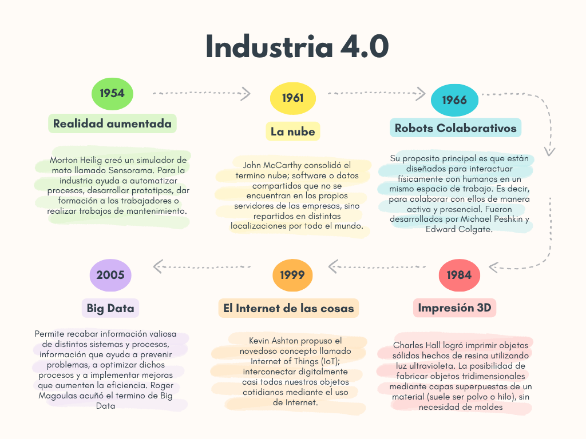

Enfoques Conceptuales de la Industria 4.0
En la Industria 4.0, el "4.0" se refiere a una cuarta revolución industrial que se espera sea
realizada por los sistemas de producción ciber-físicos que fusionan los mundos real y virtual.
- Primera revolución industrial.
Se caracterizó por la mecánica impulsada por agua y vapor a finales del siglo XVIII; comienza con la introducción de equipos mecánicos en la manufacturaLas máquinas y los motores revolucionaron la forma en que
los bienes eran producidos. La sociedad pasó de ser una sociedad agrícola a ser una sociedad
industrial.
- Segunda revolución industrial.
Surge a principios del Siglo XX, se caracterizó por la producción en masa habilitada por energía eléctrica. Involucró la producción en masa de bienes usando electricidad y
basada en la división del trabajo. Esta revolución se caracterizó por cambios organizacionales
como la implementación de la producción en línea (fordismo) y la administración científica de
procedimientos (taylorismo). La producción en masa aumentó y procedió en las industrias química, electrónica y automotriz.
- Tercera revolución industrial.
Se
caracterizó por la implementación de la electrónica y de las tecnologías de la información para
la automatización de los procesos de manufactura, lo que permite el gradual remplazo del
trabajo humano. Esta aún está presente, pero se está transformando
paulatinamente en una nueva era de industrialización.
- Cuarta revolución industrial.
Está marcada por una integración técnica de sistemas ciber físicos
en los procesos de logística y manufactura, así como también por el uso del internet de las
cosas y de los servicios en los procesos industriales.
El principio básico de Industria 4.0 es que, al conectar máquinas, flujos de trabajo y sistemas,
las empresas implementan redes inteligentes (Smart Networks) a lo largo de toda la cadena
de valor para controlarse de forma autónoma. En pocas palabras la industria 4.0 se basa en la revolución digital con Internet mucho más
móvil, sensores más pequeños y potentes que cada vez se hacen más baratos y asequibles,
e inteligencia artificial y aprendizaje automático.
